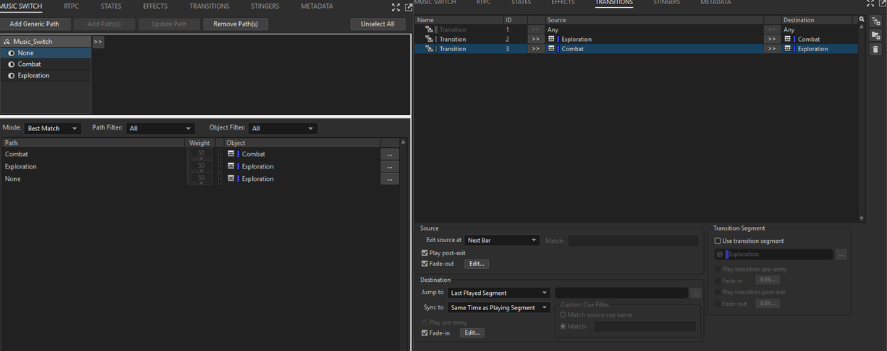

Game Audio · Sound Design · Music
Interactive Game Audio Implementation
This project explores the implementation of interactive game audio using Wwise and Unity.
The goal was to build an audio system that responds dynamically to player actions, enemies, environments and gameplay states rather than simply playing isolated sound effects.
The implementation was built around the idea that audio should communicate what is happening in the game while also contributing to the atmosphere of the world.
The project combines interactive music, environmental ambience, spatial audio, enemy audio, UI feedback, and gameplay-driven events into a unified Wwise-powered audio system. Rather than treating audio as a collection of individual sounds, the focus was on how those sounds interact with gameplay and respond to the player's actions.
Audio Assets: Some audio assets used in the project were provided with Unity's 3D Game Kit. The project focuses primarily on Wwise implementation, interactive audio systems, spatialization, and gameplay integration.Unity
Wwise
Interactive Audio
Music that responds dynamically to the state of the gameplay.
The music system was built around two primary gameplay states: exploration and combat. Wwise states control the active musical behavior, allowing the soundtrack to transition dynamically as the player's situation changes.
The exploration state provides the default musical atmosphere while the player moves through the level.
When an enemy detects the player, the music switches to the combat state, increasing tension and reflecting the change in gameplay.
The music was organized using a Wwise Switch Container with separate exploration and combat music, while transition rules control how the soundtrack moves between states.

Creating a world where location affects how sound is perceived.
Spatial audio was implemented using Wwise's environmental audio systems to create different acoustic spaces throughout the level.
Different areas of the level were treated as separate acoustic spaces.
Portals allow audio to travel between connected spaces and help create a more believable transition between rooms.
Environmental reverb was used to differentiate spaces and reinforce their physical characteristics.
3D attenuation controls how sounds change with distance from the listener.
Ambient systems designed to make the environment feel alive.
Environmental audio was built from multiple layers rather than relying on a single looping ambience. Different sounds were positioned and controlled to create a more dynamic soundscape.
Environmental water sounds were positioned in the world using 3D audio.
Ambient layers help establish the atmosphere of different areas of the level.
Different environmental behavior was used to distinguish underground areas from the exterior.
Sound events connected directly to gameplay behavior.
Enemy behaviors trigger audio events and interact with the game's combat state.
Combat events contribute to the transition between exploration and combat music.
Player movement can use different surface sounds depending on the environment.
Interactive objects use Wwise events to provide feedback when the player interacts with them.
Audio feedback for menus and player interactions.
UI sounds were implemented separately from the world audio systems so that interface feedback remains available regardless of the player's location in the game world.
Menu navigation and selection feedback.
Confirmation and interaction feedback.
Audio pause and resume behavior.
Making audio respond continuously rather than only through events.
RTPCs were used to connect gameplay values to audio parameters, allowing sound behavior to change dynamically based on what is happening in the game.
A gameplay value influences the resulting audio behavior based on the distance of the player's landing.
Parameters can be adjusted during gameplay to create more responsive audio behavior.
Building interactive audio also meant solving unexpected technical problems.
Transition timing and cue markers required careful adjustment to avoid synchronization issues between music segments.
Certain sounds became virtualized depending on their playback conditions, requiring investigation of Wwise voice behavior and event structure.
Moving or duplicating portal objects introduced spatial audio problems that required rebuilding and repositioning portal setups.
Pause behavior required coordination between gameplay states, Wwise events and the game's menu system.
The result is a connected interactive audio implementation rather than a collection of isolated sound effects.
The project brings together music, environmental audio, spatial processing, gameplay events, enemy behavior, UI feedback and dynamic parameters into one interactive system.
Project demonstration video will go here.
This project strengthened my understanding of how sound design changes when it becomes part of an interactive system. Designing the sound itself was only one part of the process; implementing it required thinking about gameplay logic, player behavior, spatial relationships and technical limitations.
It also gave me practical experience troubleshooting Wwise integration issues and iterating on systems until the audio behaved reliably inside the game.